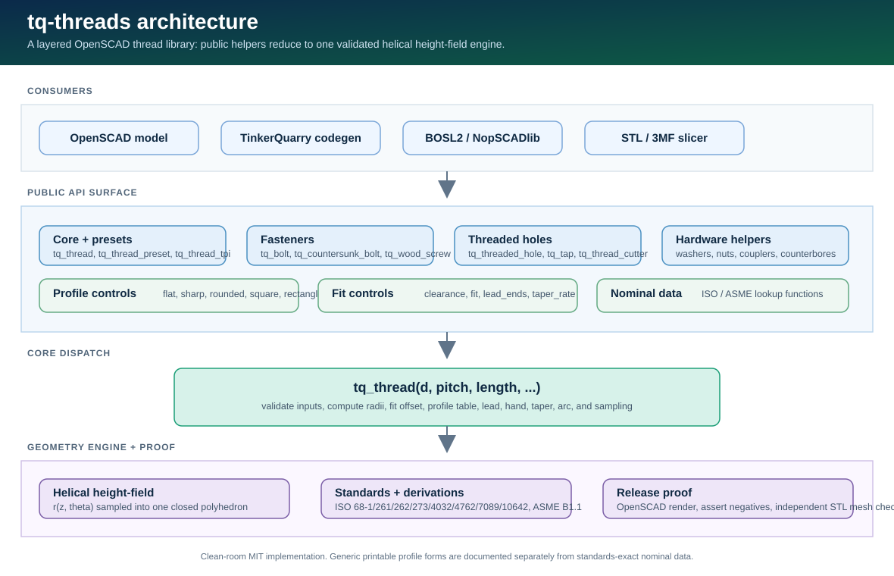

Overview
`tq-threads` creates printable threads as direct watertight geometry. It is built from public standards and first-principles geometry, with explicit FDM fit controls rather than hidden slicer assumptions.
Manifold by construction
The thread body is one closed polyhedron sampled from a helical height-field.
Printable first
`clearance`, lead chamfers, rounded roots, and resolution controls are available at call sites.
Clean-room MIT
No third-party OpenSCAD thread library code, tables, comments, or API text were copied.
include <tq_threads.scad>;
$fn = 64;
tq_thread_preset("M8", 20);
difference() {
cube([20,20,12], center=true);
tq_threaded_hole(6, 1.0, 12);
}Architecture
The public modules are wrappers around one core engine. Presets, bolts, nuts, tapped holes, augers, and cutters all converge on `tq_thread`, so fit, handedness, profile selection, taper, starts, and validation stay consistent.

How a call becomes mesh
- A model calls a public module such as `tq_thread_preset("M8", 20)`.
- The wrapper resolves nominal dimensions and forwards to `tq_thread`.
- `tq_thread` validates inputs and computes radii, clearance, fit offset, lead, profile table, chamfers, taper, arc, and sampling density.
- The engine samples `r(z, theta)` into side faces plus end caps.
- OpenSCAD receives one closed polyhedron.
r(z, theta) = profile(frac((z - dir * (theta / 360) * lead) / pitch))Installation
Vendor the file
include <tq_threads.scad>;Only `tq_threads.scad` is required at runtime.
Use as a submodule
git submodule add https://github.com/scottconverse/tq-threads libs/tq-threadsinclude <libs/tq-threads/tq_threads.scad>;Use `include`, not `use`, when you need functions and constants such as `tq_preset`, `tq_in`, `TQ_PRESETS`, or `TQ_THREADS_VERSION`.
Thread Model
The default profile is the ISO/UN basic 60-degree V. For pitch `P`, the sharp triangle height is `H = sqrt(3)/2 * P`. The flat basic profile uses crest flat `P/8`, root flat `P/4`, and engaged radial depth `5H/8`.
| Quantity | Formula | Meaning |
|---|---|---|
| Sharp V height | `0.8660254 * P` | Full theoretical triangle height. |
| Flat profile radial depth | `0.541266 * P` | Default engaged thread depth. |
| Nominal minor diameter | `d - 1.082532 * P` | Default flat external minor diameter before clearance. |
| Lead | `starts * pitch` | Axial advance per revolution. |
Core API: `tq_thread`
`tq_thread` renders an external thread by default. Set `internal=true` to render an oversized cutter for a tapped hole or nut.
tq_thread(d, pitch, length,
internal=false, starts=1, hand="right",
clearance=0.4, fit=undef,
profile="flat", angle=60,
tooth_height=undef, minor_d=undef,
crest_flat=undef, root_flat=undef, round=1,
lead_in=true, lead_out=true, chamfer=undef,
taper=0, arc=360, fn=undef,
steps_per_pitch=16, center=false,
thread_size=undef, side_angle=undef,
rect_ratio=undef, groove=false,
taper_rate=undef, lead_ends=undef);| Group | Parameters | Use |
|---|---|---|
| Required | `d`, `pitch`, `length` | Nominal major diameter, pitch, and axial length. |
| Thread behavior | `internal`, `starts`, `hand`, `arc`, `center` | External/cutter mode, multi-start, handedness, partial arcs, placement. |
| Fit | `clearance`, `fit` | FDM diametral gap plus optional ISO 965 position allowance. |
| Profile | `profile`, `angle`, `side_angle`, `thread_size`, `rect_ratio`, `tooth_height`, `minor_d` | Shape and radial depth of the thread. |
| Ends and taper | `lead_in`, `lead_out`, `lead_ends`, `chamfer`, `taper`, `taper_rate` | Starting chamfers and linear diameter reduction. |
| Mesh | `fn`, `steps_per_pitch` | Angular and axial sampling. |
External thread
A printable threaded rod.
tq_thread(8, 1.25, 20);Internal cutter
Subtract from a part.
difference() {
part();
tq_thread(6, 1.0, 14, internal=true);
}Multi-start left-hand
Lead is `starts * pitch`.
tq_thread(12, 2, 24, starts=3, hand="left");Profile Control
The default `flat` profile is the standards-based ISO/UN basic form. The other profiles are printable controls for real-world design needs.
| Goal | Parameters | Notes |
|---|---|---|
| ISO/UN basic V | `profile="flat"` | Default, standards-derived nominal geometry. |
| Full pointed V | `profile="sharp"` | Apex reaches major diameter. |
| Rounded roots | `profile="rounded"` | Better printed root strength. |
| Square tooth | `profile="square", thread_size=w` | Generic printable form; depth equals width. |
| Rectangular tooth | `profile="rectangle", rect_ratio=r` | Depth is `thread_size * rect_ratio`. |
| Helical groove | `groove=true` | Inverts the selected profile into the surface. |
| NPT-rate taper reference | `taper_rate=tq_npt_taper_rate()` | 1:16 diameter taper only, not full NPT. |
tq_thread(10, 4, 20, thread_size=1, side_angle=30, profile="sharp");
tq_thread(12, 3, 20, profile="square", thread_size=1.5);
tq_thread(12, 6, 20, profile="rectangle", thread_size=4, rect_ratio=1/3);
tq_thread(14, 4, 20, profile="square", groove=true, lead_ends="both");Presets & Lookup Functions
tq_preset("M8"); // [8, 1.25]
tq_thread_preset("M8", 20);
tq_thread_tpi(d=tq_in(1/4), tpi=20, length=tq_in(1/2));
tq_preset_count(); // 101
tq_presets_selfcheck(); // true| Function | Returns | Source |
|---|---|---|
| `tq_clearance_dia(size, fit)` | Clearance hole diameter | ISO 273 |
| `tq_washer_dims(size)` | `[inner, outer, thickness]` | ISO 7089 |
| `tq_nut_thickness(size)` | Hex nut height | ISO 4032 |
| `tq_shcs_head(size)` | `[head_diameter, head_height]` | ISO 4762 |
| `tq_csk_head_dia(size)` | Countersunk head diameter | ISO 10642 |
Threaded Primitives
`tq_threaded_rod`
Plain external threaded rod.
`tq_thread_cutter`
Oversized internal cutter for subtraction.
`tq_threaded_hole`
Convenience cutter for tapped holes.
`tq_nut` / `tq_standoff`
Printed internally-threaded parts.
difference() {
bracket();
tq_threaded_hole(6, 1.0, 12);
}
tq_nut(8, 1.25);
tq_standoff(5, 0.8, 14, od=9);Fasteners
| Module | Purpose | Important controls |
|---|---|---|
| `tq_bolt` | Socket, hex, plain, or headless machine bolt. | `head`, `head_d`, `head_h`, `shank`, `drive`. |
| `tq_countersunk_bolt` | Flat-head countersunk screw. | `head_d`, `head_angle`, `drive`, `shank`. |
| `tq_wood_screw` | Generic printable wood/self-tapping style screw. | `point`, `core_d`, `thread_depth`, `shank`, `taper`. |
| `tq_bottle_thread` | Generic coarse closure-style thread. | `starts`, `depth_frac`, `tooth_height`, `internal`. |
| `tq_auger` | Generic deep coarse helical flight. | `pitch`, `flight`, `starts`, `taper`. |
tq_bolt(8, 1.25, 20, head="socket", shank=4);
tq_countersunk_bolt(5, 0.8, 16, drive="phillips");
tq_wood_screw(5, 20, point="cone", shank=4);
tq_bottle_thread(28, 4, 10, starts=2);
tq_auger(18, 80, pitch=18, flight=5);Holes, Washers, Couplers & Wrappers
Clearance, counterbore, and countersink helpers are negative cutters. Child-difference wrappers apply the cutter directly to `children()`.
tq_clearance_hole(5, 10, fit="medium");
tq_recessed_clearance_hole(5, 12);
tq_countersunk_clearance_hole(5, 8);
tq_washer(8);
tq_rod_coupler(8, 1.25, 18);
tq_tap(8, 1.25, 12)
cube([24,24,12]);Drives, Hex Helpers & Debug
Drive helpers are ordinary OpenSCAD solids intended for subtraction or visualization. The Phillips form is a printable approximation, not gauge-certified drive geometry.
| API | Use |
|---|---|
| `tq_hex(af, h)` | Hexagonal prism by across-flats width. |
| `tq_hex_drive(af, depth)` | Hex socket cutter. |
| `tq_phillips_drive(size, depth)` | Cruciform recess cutter or tip shape. |
| `tq_phillips_tip(size, shank_d, length)` | Printable driver-bit tip. |
| `tq_thread_debug(d, pitch, length)` | Echo diagnostic dimensions and render a visual thread. |
difference() {
cylinder(h=6, d=12);
translate([0,0,-0.01]) tq_hex_drive(4, 3);
}
tq_phillips_tip(size=2);
tq_thread_debug(8, 1.25, 12);FDM Fit & Print Tuning
| Fit target | `clearance` | Use |
|---|---|---|
| Snug, tuned printer | 0.2-0.3 mm | Careful calibration, slower prints. |
| General default | 0.4 mm | Best first try. |
| Loose/easy assembly | 0.5-0.6 mm | Rougher printers or larger parts. |
| Large caps/lids | 0.5-0.8 mm | Coarse closure threads. |
- Print the thread axis vertical for clean flanks.
- Use lead chamfers for self-starting threads.
- Use `profile="rounded"` for stronger roots.
- Use heat-set inserts for small, high-cycle, or high-torque holes.
Integration Patterns
BOSL2 / NopSCADlib
Use other libraries for shapes and catalogs; use tq-threads for printable thread geometry.
include <BOSL2/std.scad>
include <tq_threads.scad>
difference() {
cuboid([24,24,12], rounding=2);
tq_threaded_hole(6, 1.0, 12);
}TinkerQuarry code generation
Generated OpenSCAD should explicitly call `tq_thread*` APIs when a design requires real printed threads. Smooth bolt/nut blanks do not prove thread use.
Migration from Other OpenSCAD Thread Libraries
`tq-threads` is a clean-room implementation with its own API. The table below maps common legacy call shapes to the `tq_*` surface.
| Old-style call | tq-threads equivalent |
|---|---|
| `metric_thread(diameter, pitch, length)` | `tq_thread(d=diameter, pitch=pitch, length=length)` |
| `english_thread(dia_inch, tpi, len_inch)` | `tq_thread_tpi(d=tq_in(dia_inch), tpi=tpi, length=tq_in(len_inch))` |
| Internal-thread flag | `tq_thread(..., internal=true)` or `tq_thread_cutter(...)` |
| Screw-hole wrapper | `difference(){ part(); tq_threaded_hole(d, pitch, depth); }` |
| Rod-start / rod-end helpers | `tq_rod_start(...)` / `tq_rod_end(...)` |
| Multi-start and left-hand options | `starts=...`, `hand="left"` |
Testing & Release Proof
powershell -ExecutionPolicy Bypass -File scripts\render_proof.ps1
powershell -ExecutionPolicy Bypass -File scripts\render_proof.ps1 -HeavyThe proof captures stdout and stderr, renders split examples, requires negative tests to fail with real `assert` text, writes BOM-free generated SCAD, and checks every positive STL with the independent edge-pairing mesh checker.
Troubleshooting
| Symptom | Fix |
|---|---|
| Thread too tight | Increase `clearance` by 0.1 mm, print axis vertical, verify extrusion and elephant foot. |
| Thread too loose | Lower `clearance`, verify XY calibration, check slicer horizontal expansion. |
| `thread_size must be <= pitch` | Reduce tooth width or increase pitch. |
| `minor radius <= 0` | Use larger `d`, smaller pitch, smaller `tooth_height`, or less taper. |
| OpenSCAD cannot find the library | Set `OPENSCADPATH` to the repo/vendor root or use a relative include path. |
Limits & Design Honesty
Exact or standards-derived
ISO/UN 60-degree geometry, listed metric/Unified presets, listed ISO hardware dimensions, and ISO 965 position formulas.
Generic printable forms
Square, rectangular, groove, bottle, wood-screw, auger, Phillips, and fallback dimensions are intentionally approximate unless a standard is explicitly named.